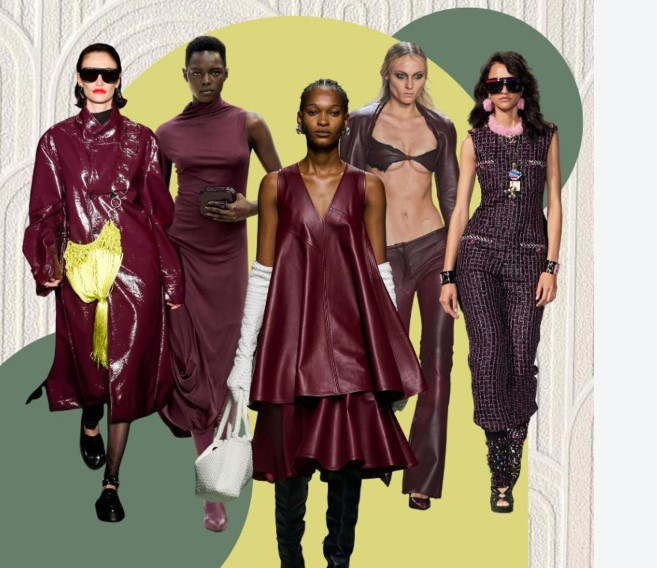
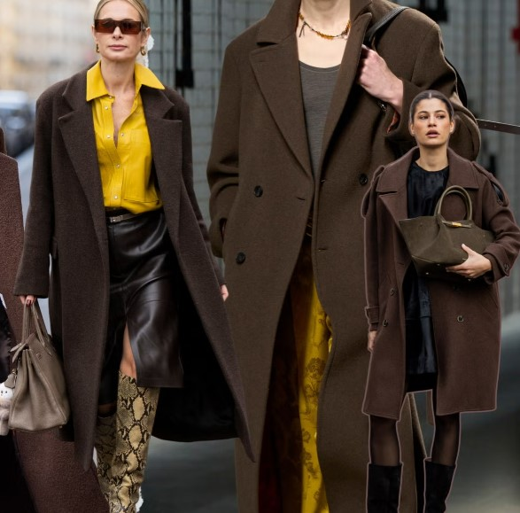
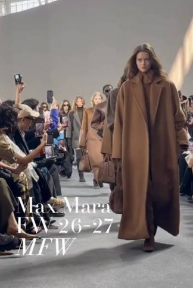
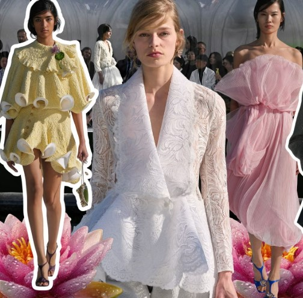

Tendencias y Colores Clave
Paleta de Colores (Borgoña y Café Chocolate)
Destacan el blanco, rojo, borgoña y los tonos chocolate intensos.

Siluetas y Sastrería
Vuelven las hombreras exageradas de los años 80 y los abrigos oversize.

Colecciones en Tiendas y Diseñadores
-
Max Mara: Inspiración medieval con abrigos monocromáticos y líneas elegantes.

-
Dior & Alta Costura: Vestidos y texturas fluidas que marcan la pauta en París.
